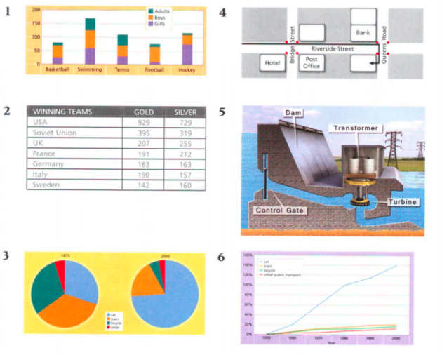
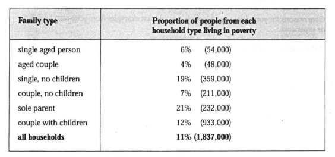
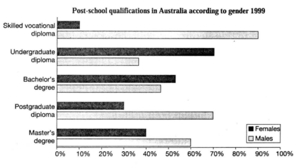
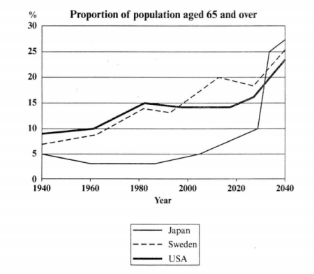
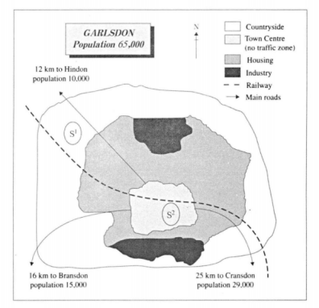
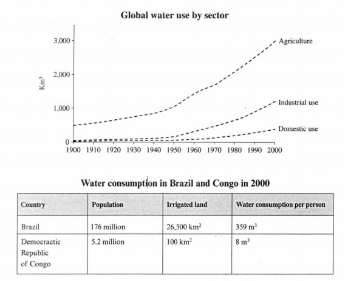
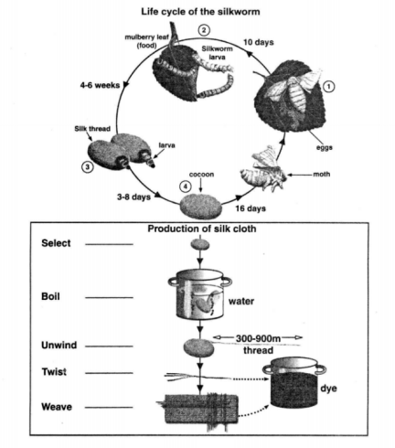
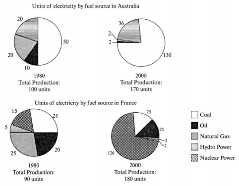

Before learning how to write Task 1 answers, you should first become familiar with these common types of visual information. By completing the following exercises, you will develop a better understanding of them.







